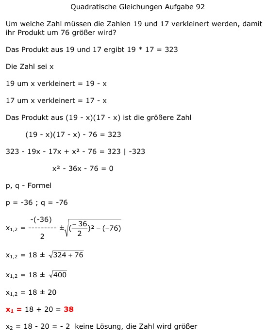

Aufgabe 92 Um welche Zahl müssen die Zahlen 19 und 17 verkleinert werden, damit ihr Produkt um 76 größer wird? Das Produkt aus 19 und 17 ergibt 19 * 17 = 323 Die Zahl sei x 19 um x verkleinert = 19 - x 17 um x verkleinert = 17 - x Das Produkt aus (19 - x)(17 - x) ist die größere Zahl (19 - x)(17 - x) - 76 = 323 323 - 19x - 17x + x2 - 76 = 323 | -323 x2 - 36x - 76 = 0 p, q - Formel p = -36 ; q = -76  x1,2 = 18 ± 20 x1 = 18 + 20 = 38 x2 = 18 - 20 = - 2 keine Lösung, die Zahl wird größer